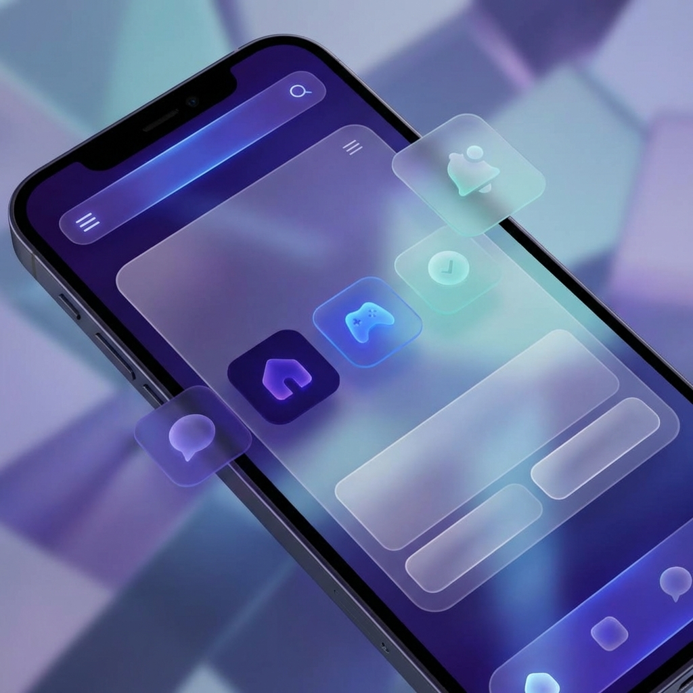

项目背景
Neo-Finance 是一款旨在简化个人资产管理的移动端应用。在调研中我们发现，传统财务应用往往过于严肃且数据展示复杂，用户很难产生持续记账的动力。因此，我决定尝试一种更具现代感、简洁且充满活力的视觉风格。

设计解决路径
我们采用了“毛玻璃” (Glassmorphism) 作为核心视觉语言，通过层级分明的透明度处理，让复杂的财务数据在视觉上变得轻盈。同时，使用了高饱和度的渐变色来标注不同的资产类别，增强识别度。
核心挑战
- 平衡视觉美感与数据易读性。
- 在移动端实现高性能的实时毛玻璃模糊效果。
- 构建一套可复用的响应式组件系统。